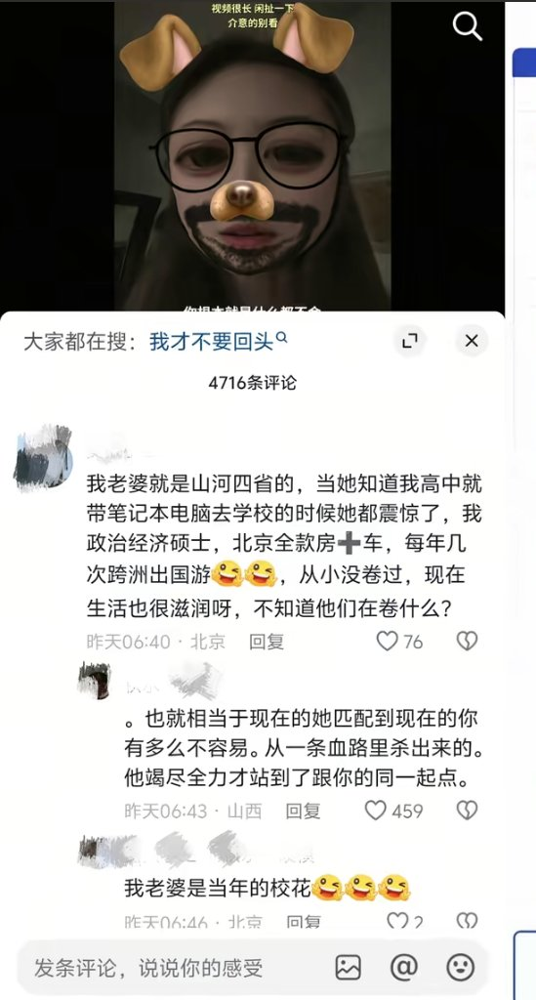
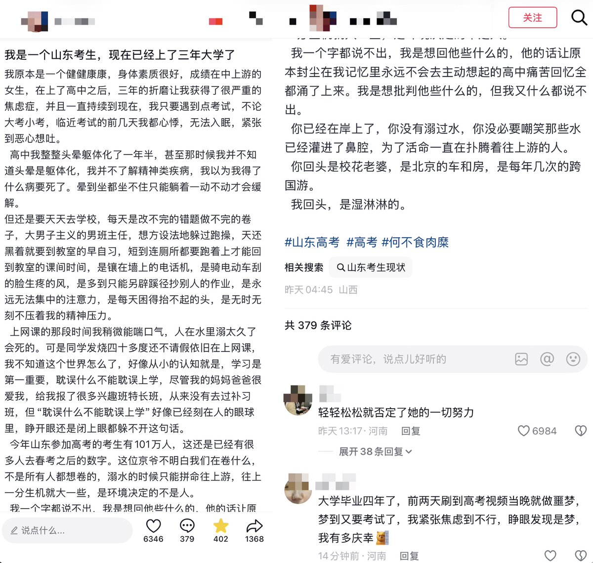

愿晚星照常升起🌈(keep4o)
@tadatsukiei
@whyyoutouzhele 不患寡而患不均，你看地区发展拉这么大，人民内部矛盾不就能大力发展了吗？


李老师不是你老师
@whyyoutouzhele
“何不食肉糜”
近日，一名博主讲述高中三年那噩梦般的生活。
结果评论区引来一名京爷回复：
“我老婆就是山河四省的，当她知道我高中就带笔记本电脑去学校的时候她都震惊了。
我政治经济硕士，北京全款房十车，每年几次跨洲出国游。
从小没卷过，现在生活也很滋润呀，不知道他们在卷什么?” https://t.co/EWAQBy7V1z